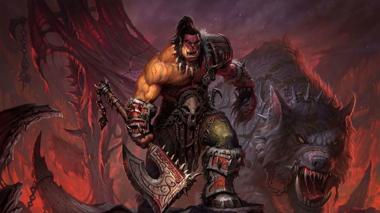
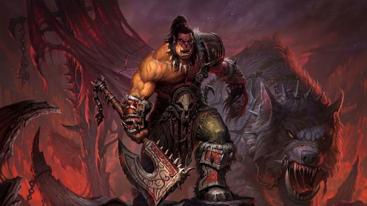

Especialista en ataque con armas a distancia, además de acompañarle una mascota que ayuda en
combate. Disponible para Elfos de la Noche, Humanos, Tauren, Orcos, Elfos de Sangre, Enanos,
Draenei, Trol, Renegados, Goblin, Huargen, Pandaren y nuevas Razas Aliadas introducidas en Battle for Azeroth,
(Elfos del Vacío, Draeneis Forjados por la Luz, Enanos Hierro Negro,
Humano de Kul Tiras y Mecagnomos, por parte de la Alianza, y Nocheternas, Taurens de Monte Alto, Orcos Mag'har,
Trols Zandalari y Vulperas por parte de la Horda). Poseen tres especializaciones en la rama
de talentos: Puntería (daño con armas a distancia), Bestias (más daño con mascotas), o Supervivencia
(énfasis en trampas y defensa a corta distancia). Aunque en un inicio eran capaces de llevar todo tipo
de armas excepto varitas y mazas...
NOVEDADES
World of Warcraft (abreviado como WoW, literalmente en español Mundo de Warcraft) es un videojuego
de rol multijugador masivo en línea desarrollado por Blizzard Entertainment. Es el cuarto
juego lanzado establecido en el universo fantástico de Warcraft, el cual fue
introducido por primera vez por Warcraft: Orcs & Humans en 1994, World of Warcraft transcurre dentro del mundo de Azeroth,
cuatro años después de los sucesos finales de la anterior entrega de Warcraft
El 27 de octubre de 2020 será lanzada la octava expansión, World of Warcraft: Shadowlands.
Con 7.7 millones de suscriptores, World of Warcraft continúa siendo con diferencia el juego en línea por
suscripción con el mayor registro de usuarios, manteniendo el
récord Guinness para el MMORPG (Massive Multiplayer Online Rol Playing Game) más popular.
Recogiendo datos de World of Warcraft y otros juegos de tipo MMORPG


 
